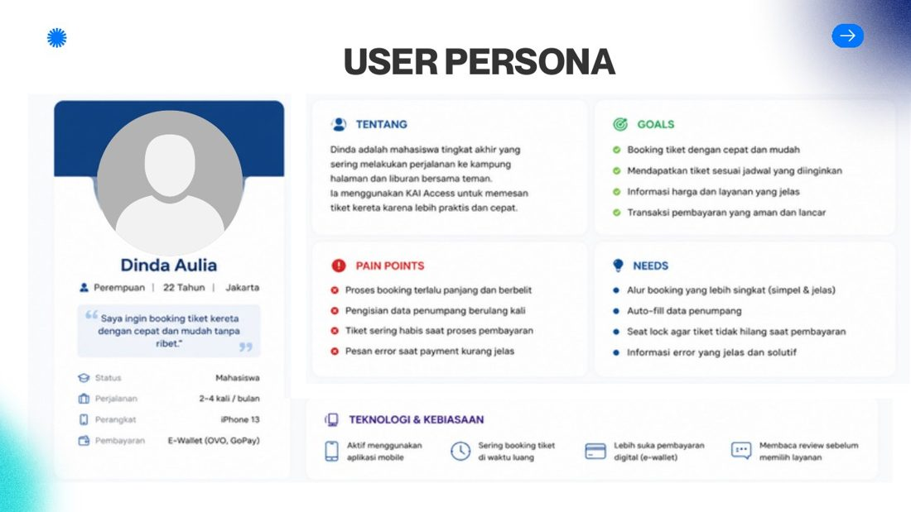
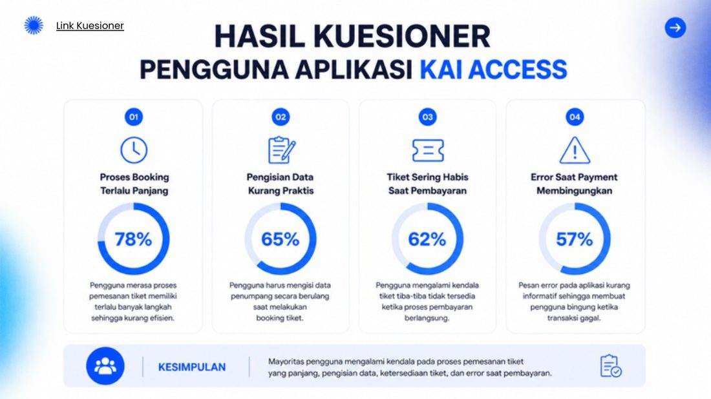
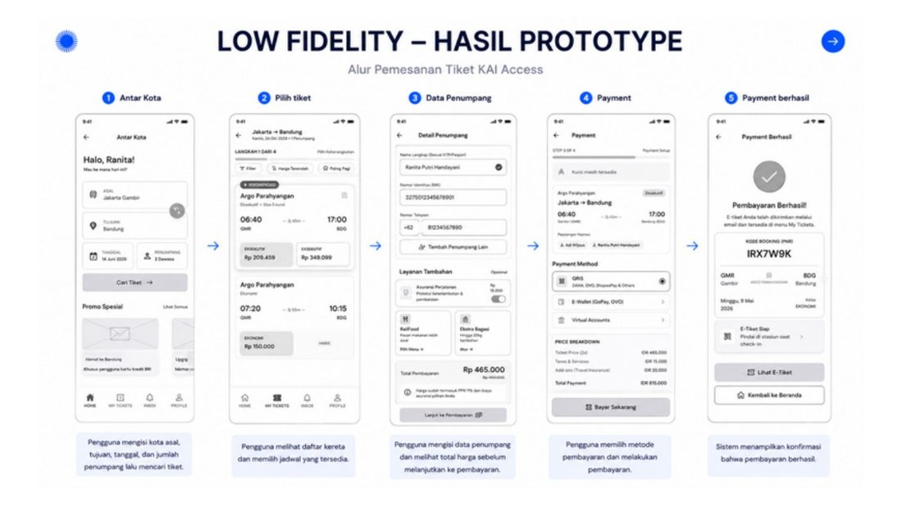
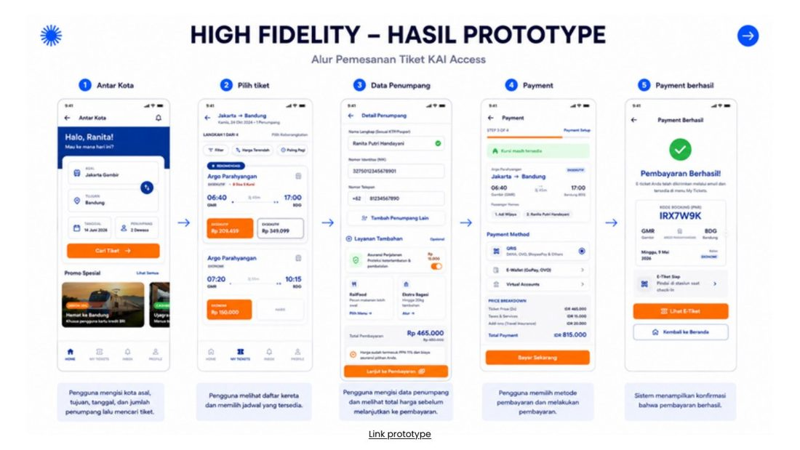

Smart Booking Flow — Redesign KAI Access
Latar belakang. KAI Access dipakai untuk memesan tiket kereta, tetapi proses booking masih bermasalah. Saya mendesain ulang alurnya agar lebih cepat, sederhana, dan nyaman.
Permasalahan utama
- Alur booking terlalu panjang.
- Pengisian data penumpang berulang.
- Tiket sering habis saat pembayaran.
- Pesan error saat payment membingungkan.
Hasil kuesioner pengguna
| Booking terlalu panjang | 78% | |
| Isi data kurang praktis | 65% | |
| Tiket habis saat bayar | 62% | |
| Error payment membingungkan | 57% |




Usability testing (Maze) — 7 responden, 5 task
| Task | Success | Misclick | Durasi |
|---|---|---|---|
| Pencarian tiket | 57,1% | 91,1% | 27,3 dtk |
| Menemukan tiket | 100% | 12,5% | 8,4 dtk |
| Pilih jadwal | 100% | 12,5% | 6,4 dtk |
| Isi data penumpang | 100% | 0% | 5,6 dtk |
| Payment | 100% | 0% | 6,0 dtk |
Insight: tahap pencarian tiket punya misclick tertinggi dan success rate terendah, jadi pengguna masih bingung di proses awal. Tahap lain berhasil diselesaikan 100% oleh semua responden.
Pelajaran utama
- Memahami user flow membantu merancang pengalaman yang terstruktur.
- Data dan feedback pengguna menemukan masalah yang tidak terlihat dari asumsi.
- Kesederhanaan dan konsistensi meningkatkan usability.
- Iterasi berdasarkan feedback menghasilkan desain lebih baik.
Tantangan
- Memahami kebutuhan pengguna yang beragam.
- Menyeimbangkan informasi lengkap dengan tampilan sederhana.
- Menyesuaikan layout ke berbagai ukuran layar dan membagi waktu riset, desain, dan testing.